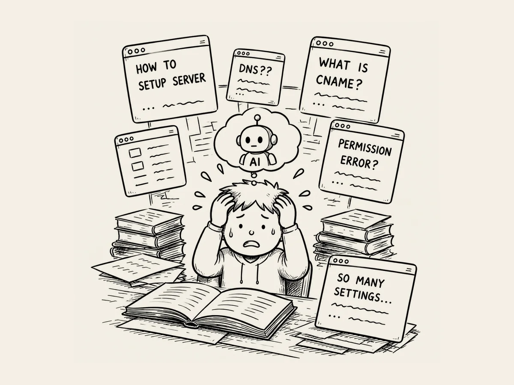

21.
I Tried to Imagine Doing This Without AI.
I was getting into the final stages of building the website.
It was time to move the files from my computer to the server and set everything up.
I was busy working away,
but I didn't really know what I was doing.
I understood it vaguely.
Okay, I'm moving everything to its final home now and connecting the domain.
That was about it.
What I actually did was simple.
Take a screenshot.
Show it to AI.
Type what it told me to type.
Take another screenshot.
Show it again.
Type again.
I must have done this dozens of times.
All day long, I was doing what AI told me to do.
And little by little, things were moving forward.
Then a thought suddenly hit me.
Hang on. What would this be like without AI?
I imagined it for a moment.
I'd have to figure out all those setup screens and unfamiliar instructions one by one,
then set everything up myself.
It felt like it would take me more than a month.
Just thinking about it made my chest feel tight.
I didn't even want to imagine it.
I probably would have given up several times by this point.
Suddenly, I felt lucky to be living in the age of AI.
